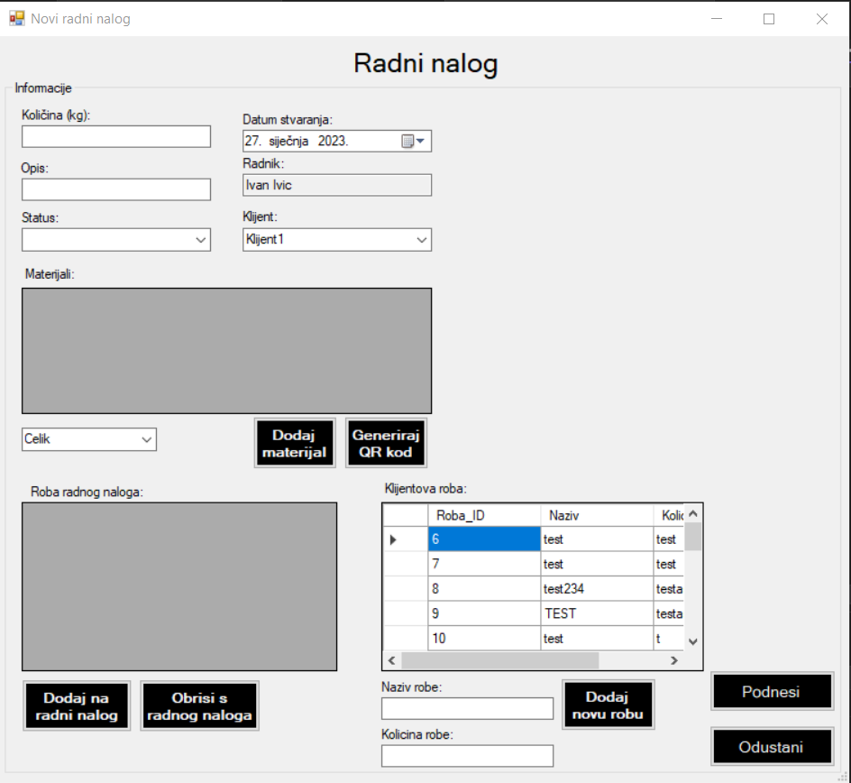

Ovo je forma za izdavanje novog radnog naloga. Ovdje možete izdati novi radni nalog sa svim potrebnim informacijama. Unutar prvog polja možete upisati ukupnu količinu robe u kilogramima. Unutar opisa možete opisati što će te raditi ili bilo koju informaciju koju smatrate da bi bila važna. Ispod toga imate padajući izbornik za status radnog naloga, koji bi kod izdavanja radnog naloga trebao biti "Napravljen". Desno iznad možete odabrati datum kada ste izdali radni nalog, ispod toga se nalazi ime radnika koji podnosi radni nalog. Ovo je fiksna vrijednost koja poprima vrijednost radnika koji se prijavio u sustav. Nadalje se nalazi padajući izbornik kod kojeg birate klijenta čiju ćete robu obrađivati. Sukladno promjena u navedenom padajućem izborniku mijenja se tablica "Klijentova roba" na donjem desnom dijelu ekrana, u kojoj se prikazuje sva roba koju je odabrani klijent dao na obradu. Ovdje možete i dodati još robe tom klijentu, ako ispunite dva polja ispod tablice "Naziv robe" i "Kolicina robe" i kliknite na gumb "Dodaj novu robu". Tablica "Materijali" služi tome da vidite koje materijale ćete koristiti u postupku obrade robe. Preko padajućeg izbornika ispod tablice možete odabrati koji materijal želite i kliknite na gumb "Dodaj materijal". Odmah desno od tog gumba, ako kliknete na gumb "Generiraj QR kod", stvorit će se QR kod pomoću kojeg će se moći evidentirati roba na računu, skeniranjem istog. U donjem lijevom uglu nalazi se zadnja tablica prozora "Roba radnog naloga". U ovoj tablici vidjet ćete svu robu koju dodate na radni nalog. Robu možete dodati tako da odaberete željenu robu u tablici "Klijentova roba" i zatim na gumb "Dodaj na radni nalog". Istu možete i obrisati ako ju odaberete unutar tablice "Roba radnog naloga" te kliknete na gumb "Obrisi s radnog naloga". Na kraju imate dva gumba. Pomoću gumba "Podnesi" podnašate zahtjev te se on sprema u bazu, isti će se prikazati i na prijašnjem prozoru "Popis radnih naloga" na kojeg se možete vratiti klikom na gumb "Odustani".
